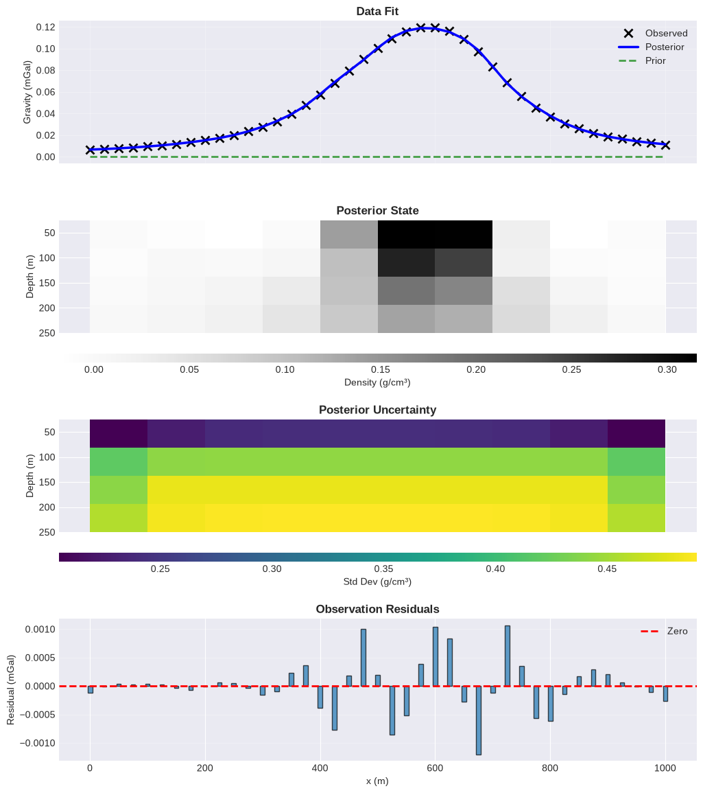

2D Gravity Inversion#
Bayesian Inversion for Subsurface Density Estimation#
This notebook demonstrates solving a 2D gravity inverse problem using Bayesian estimation.
Problem Setup#
State (x): Density anomalies in subsurface prisms [g/cm³]
Observations (z): Vertical component of gravity field at surface [mGal]
Forward model: z = H @ x (Newtonian gravity from rectangular prisms)
Geometry#
Domain: 100m horizontal × 40m depth
Mesh: 10 × 4 prisms (horizontal × vertical)
Observations: 41 surface gravity measurements
import matplotlib.pyplot as plt
import numpy as np
import pandas as pd
from mpl_toolkits.axes_grid1 import make_axes_locatable
from fips import Block, CovarianceMatrix, ForwardOperator, InverseProblem, Vector
# Configure plotting
plt.style.use("seaborn-v0_8-darkgrid")
%matplotlib inline
Configuration#
# Physical constant
GAMMA = 6.67e-4 # Gravitational constant in CGS units
Define Geometry and Generate Synthetic Data#
# Observed gravity anomalies
z_obs = np.array(
[
6.5112333e-03,
7.1144759e-03,
7.8050213e-03,
8.6004187e-03,
9.5228049e-03,
1.0600394e-02,
1.1869543e-02,
1.3377636e-02,
1.5187140e-02,
1.7381291e-02,
2.0071869e-02,
2.3409173e-02,
2.7592423e-02,
3.2872699e-02,
3.9524661e-02,
4.7739666e-02,
5.7427097e-02,
6.8126652e-02,
7.9261565e-02,
9.0330964e-02,
1.0070638e-01,
1.0950167e-01,
1.1588202e-01,
1.1936106e-01,
1.1961197e-01,
1.1617789e-01,
1.0868957e-01,
9.7370419e-02,
8.3429883e-02,
6.9002570e-02,
5.6079733e-02,
4.5525921e-02,
3.7267881e-02,
3.0880404e-02,
2.5919366e-02,
2.2024198e-02,
1.8925481e-02,
1.6427182e-02,
1.4387142e-02,
1.2701558e-02,
1.1293783e-02,
]
)
# Create observation locations (41 points from 0 to 1000 m)
obs_locs = np.linspace(0, 1000, len(z_obs))
# Create mesh boundaries (10 x 4 prisms)
prism_x = np.linspace(0, 1000, 11) # 11 boundaries for 10 prisms
prism_z = np.linspace(25, 250, 5) # 5 boundaries for 4 prisms
n_obs = len(z_obs)
n_x = len(prism_x) - 1
n_z = len(prism_z) - 1
n_state = n_x * n_z
print("Data created:")
print(f" Observations: {n_obs}")
print(f" State dimension: {n_state} ({n_x} × {n_z} prisms)")
print(f" Gravity range: [{z_obs.min():.4f}, {z_obs.max():.4f}] mGal")
print(
f" Domain: {prism_x.min()}-{prism_x.max()} m (horizontal), {prism_z.min()}-{prism_z.max()} m (depth)"
)
Data created:
Observations: 41
State dimension: 40 (10 × 4 prisms)
Gravity range: [0.0065, 0.1196] mGal
Domain: 0.0-1000.0 m (horizontal), 25.0-250.0 m (depth)
Build Forward Operator#
def gravity_integral(x, z):
"""
Analytical integral for Newtonian gravity from a rectangular prism.
Parameters
----------
x, z : array_like
Horizontal and vertical distances
Returns
-------
array_like
Integrated gravity contribution
"""
return z * np.arctan(x / z) + x / 2 * np.log(z**2 + x**2)
def build_forward_operator(obs_locs, prism_x, prism_z, gamma=GAMMA):
"""
Build forward operator H relating density to gravity.
Maps state (density in prisms) to observations (gravity at surface):
z = H @ x
Parameters
----------
obs_locs : array
Observation locations (horizontal positions) [m]
prism_x : array
Prism boundaries in x-direction [m]
prism_z : array
Prism boundaries in z-direction (depth) [m]
gamma : float
Gravitational constant
Returns
-------
H : ndarray
Forward operator [n_obs × n_state]
"""
n_obs = len(obs_locs)
n_x = len(prism_x) - 1
n_z = len(prism_z) - 1
n_state = n_x * n_z
H = np.zeros((n_obs, n_state))
idx = 0
for ix in range(1, len(prism_x)):
x1 = prism_x[ix - 1] - obs_locs # Lower x boundary
x2 = prism_x[ix] - obs_locs # Upper x boundary
for iz in range(1, len(prism_z)):
z1 = prism_z[iz - 1] # Upper z boundary (shallow)
z2 = prism_z[iz] # Lower z boundary (deep)
# Compute gravity contribution using analytical formula
contrib = (
gravity_integral(x2, z2)
- gravity_integral(x2, z1)
- gravity_integral(x1, z2)
+ gravity_integral(x1, z1)
)
H[:, idx] = 2 * gamma * contrib
idx += 1
return H
# Build forward operator
print("Building forward operator...")
H = build_forward_operator(obs_locs, prism_x, prism_z)
print(f"Forward operator shape: {H.shape}")
print(f" Condition number: {np.linalg.cond(H):.2e}")
Building forward operator...
Forward operator shape: (41, 40)
Condition number: 5.38e+07
Setup Inverse Problem#
Prior Information#
Mean: x₀ = 0 (zero density anomaly)
Covariance: S_0 = 0.5² I (independent prisms)
Observation Error#
S_z = (0.05 · max(z))² I (5% of maximum signal)
Bayesian Framework#
Posterior estimate: $\(\hat{x} = x_0 + K(z - Hx_0)\)$
Posterior covariance: $\(\hat{S} = S_0 - (HS_0)^T(HS_0H^T + S_z)^{-1}(HS_0)\)$
# Create indices
obs_idx = pd.Index([f"obs_{i:03d}" for i in range(n_obs)], name="x")
state_idx = pd.Index([f"prism_{i:03d}" for i in range(n_state)], name="prism")
# Observation vector
z = Vector(
name="observations", data=[Block(pd.Series(z_obs, index=obs_idx, name="gravity"))]
)
# Prior state (zero density anomaly)
x_0 = Vector(
name="prior",
data=[Block(pd.Series(np.zeros(n_state), index=state_idx, name="density"))],
)
# Prior error covariance (independent prisms)
sigma_x = 0.5 # Prior uncertainty [g/cm³]
S_0 = CovarianceMatrix(
pd.DataFrame(
np.diag(sigma_x**2 * np.ones(n_state)), index=x_0.index, columns=x_0.index
)
)
# Observation error covariance
sigma_z = 0.05 * np.max(z_obs) # 5% of max signal
S_z = CovarianceMatrix(
pd.DataFrame(np.diag(sigma_z**2 * np.ones(n_obs)), index=z.index, columns=z.index)
)
# Forward operator
H_mat = ForwardOperator(pd.DataFrame(H, index=z.index, columns=x_0.index))
# Create problem
problem = InverseProblem(
prior=x_0, obs=z, forward_operator=H_mat, prior_error=S_0, modeldata_mismatch=S_z
)
print("Inverse problem configured.")
print(f" Prior uncertainty: {sigma_x} g/cm³")
print(f" Observation uncertainty: {sigma_z:.4f} mGal")
Inverse problem configured.
Prior uncertainty: 0.5 g/cm³
Observation uncertainty: 0.0060 mGal
Solve Problem#
# Solve using Bayesian estimator
print("Solving...")
problem.solve(estimator="bayesian")
print("✓ Solution complete")
Solving...
✓ Solution complete
Diagnostics#
Analyze the solution quality and information content.
# Extract results
x_post = problem.posterior.data.values
z_obs_vals = problem.obs.data.values
z_post = problem.posterior_obs.data.values
z_prior = problem.prior_obs.data.values
# Posterior state
print("POSTERIOR STATE (DENSITY)")
print(f" Mean: {x_post.mean():.4f} g/cm³")
print(f" Std: {x_post.std():.4f} g/cm³")
print(f" Range: [{x_post.min():.4f}, {x_post.max():.4f}] g/cm³")
# Observation fit
print("\nOBSERVATION FIT")
print(f" RMSE: {problem.estimator.RMSE:.6e} mGal")
print(f" R²: {problem.estimator.R2:.4f}")
residuals = z_obs_vals - z_post
print(f" Max residual: {np.abs(residuals).max():.6e} mGal")
# Uncertainty reduction
prior_std = np.sqrt(np.diag(problem.prior_error.values))
post_std = np.sqrt(np.diag(problem.posterior_error.values))
reduction = (1 - post_std / prior_std) * 100
print("\nUNCERTAINTY REDUCTION")
print(f" Mean: {reduction.mean():.1f}%")
print(f" Range: [{reduction.min():.1f}%, {reduction.max():.1f}%]")
# Information content
print("\nINFORMATION CONTENT")
print(f" DOFS: {problem.estimator.DOFS:.1f}")
print(f" Reduced χ²: {problem.estimator.reduced_chi2:.3f}")
POSTERIOR STATE (DENSITY)
Mean: 0.0609 g/cm³
Std: 0.0931 g/cm³
Range: [-0.0185, 0.3153] g/cm³
OBSERVATION FIT
RMSE: 4.625043e-04 mGal
R²: 0.9999
Max residual: 1.205564e-03 mGal
UNCERTAINTY REDUCTION
Mean: 18.9%
Range: [2.0%, 59.1%]
INFORMATION CONTENT
DOFS: 12.0
Reduced χ²: 0.054
Visualization#
Data Fit#
# Combined visualization: all plots with shared x-axis
fig, axes = plt.subplots(
4, 1, figsize=(12, 14), sharex=True, gridspec_kw={"hspace": 0.4}
)
# Prepare data for pcolormesh plots
x_post_2d = x_post.reshape(n_x, n_z).T
x_post_std = np.sqrt(np.diag(problem.posterior_error.values))
x_post_std_2d = x_post_std.reshape(n_x, n_z).T
X, Z = np.meshgrid(prism_x, prism_z)
# Plot 1: Data fit
ax = axes[0]
ax.plot(obs_locs, z_obs_vals, "kx", label="Observed", markersize=8, markeredgewidth=2)
ax.plot(obs_locs, z_post, "b-", label="Posterior", linewidth=2.5)
ax.plot(obs_locs, z_prior, "g--", label="Prior", linewidth=2, alpha=0.7)
ax.set(ylabel="Gravity (mGal)")
ax.set_title("Data Fit", fontweight="bold", fontsize=12)
ax.legend(fontsize=10)
ax.grid(True, alpha=0.3)
# Plot 2: Posterior density
ax = axes[1]
im1 = ax.pcolormesh(X, Z, x_post_2d, cmap="Greys", shading="flat")
ax.set(ylabel="Depth (m)")
ax.set_title("Posterior State", fontweight="bold", fontsize=12)
ax.invert_yaxis()
cax1 = make_axes_locatable(ax).append_axes("bottom", size="8%", pad=0.3)
cbar1 = plt.colorbar(im1, cax=cax1, orientation="horizontal")
cbar1.set_label("Density (g/cm³)", fontsize=10)
# Plot 3: Posterior uncertainty
ax = axes[2]
im2 = ax.pcolormesh(X, Z, x_post_std_2d, cmap="viridis", shading="flat")
ax.set(ylabel="Depth (m)")
ax.set_title("Posterior Uncertainty", fontweight="bold", fontsize=12)
ax.invert_yaxis()
cax2 = make_axes_locatable(ax).append_axes("bottom", size="8%", pad=0.3)
cbar2 = plt.colorbar(im2, cax=cax2, orientation="horizontal")
cbar2.set_label("Std Dev (g/cm³)", fontsize=10)
# Plot 4: Residuals
ax = axes[3]
residuals = z_obs_vals - z_post
ax.bar(obs_locs, residuals, width=8, alpha=0.7, edgecolor="black")
ax.axhline(0, color="r", linestyle="--", linewidth=2, label="Zero")
ax.set(xlabel="x (m)", ylabel="Residual (mGal)")
ax.set_title("Observation Residuals", fontweight="bold", fontsize=12)
ax.legend(fontsize=10)
ax.grid(True, alpha=0.3, axis="y")
plt.show()
